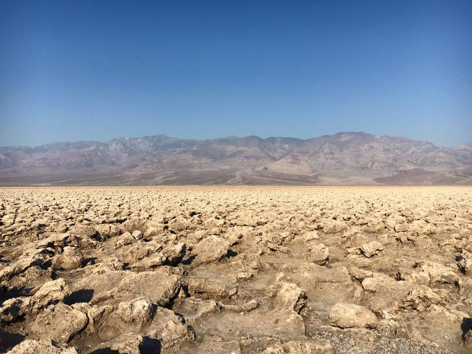
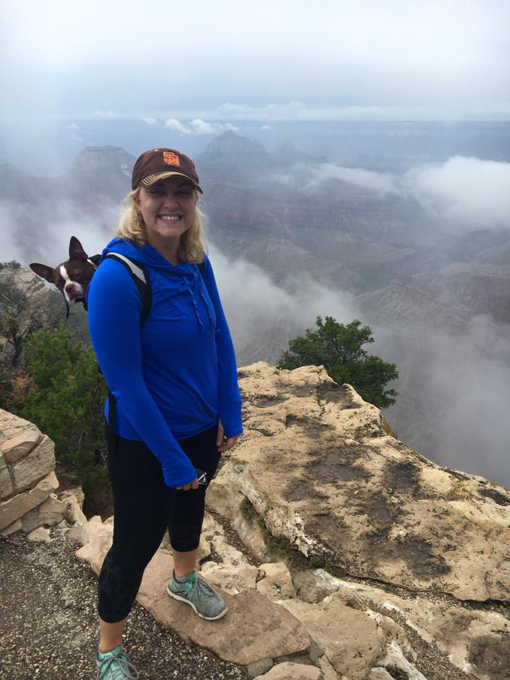
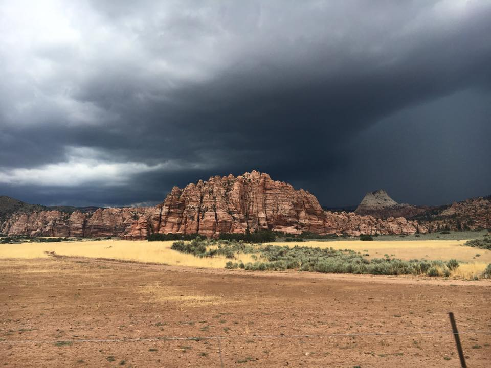
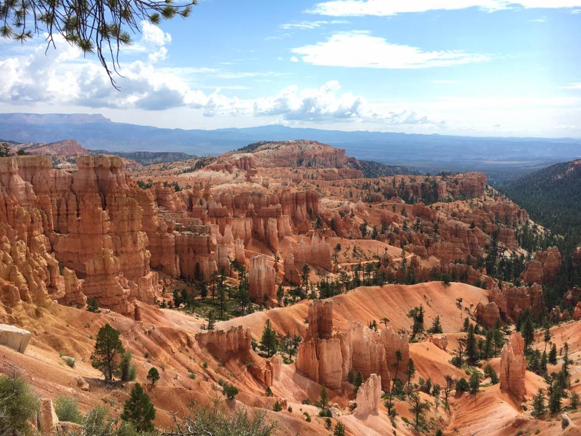
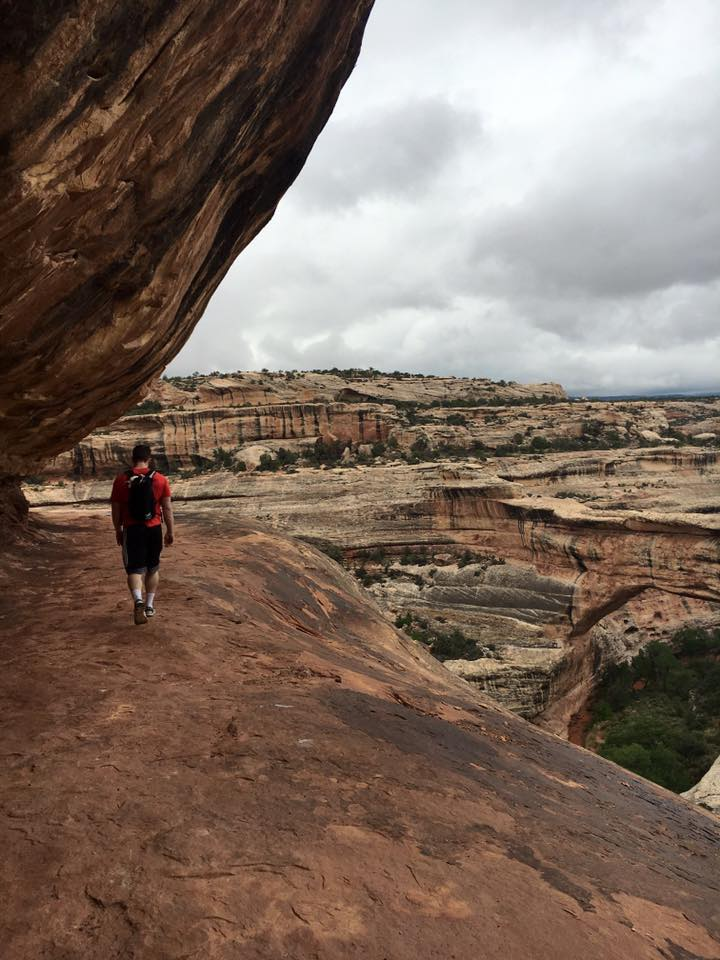
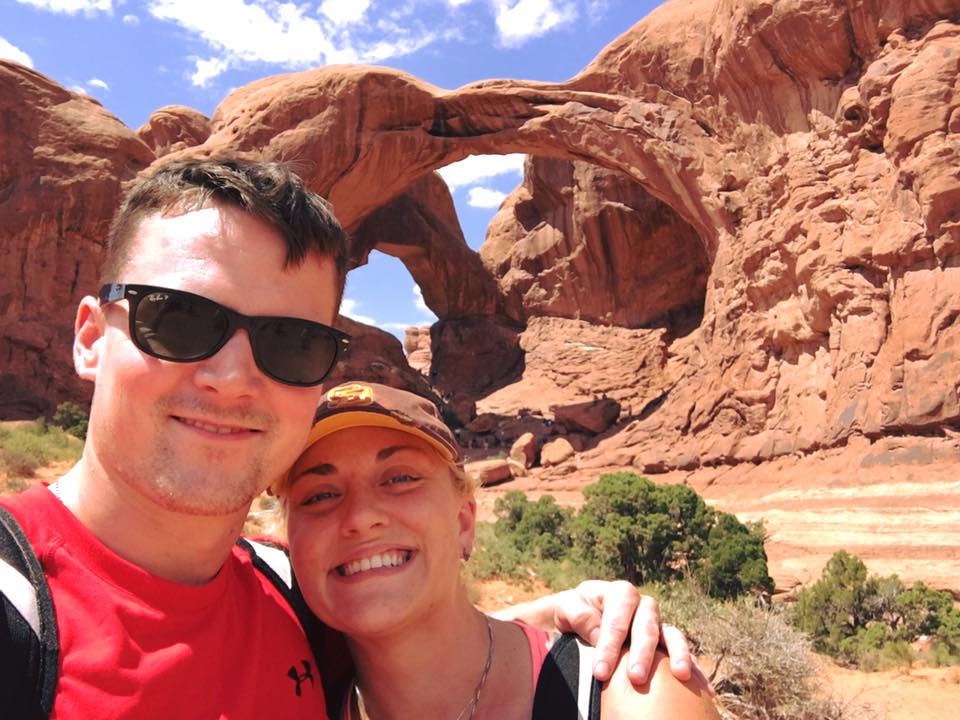

First leg of or trip was heading up north from San Diego to Death Valley, and then up through Utah, Colorado, and Wyoming towards Yellowstone. Death valley definitely deserves it's name as it was extremely hot and hardly anything growing there. One really cool place was called the Devil's Golf Course. Death Valley is below sea level.
After surviving our first park, we headed to the Grand Canyon. It was a foggy day but we did get a quick glimpse of the canyon. Luckily, we had both seen it before.
The next stop was perhaps our favorite park, even though the weather wasn't great (it even started to hail). But Zion was absolutely stunning. We definitely want to come back one day.
Next stop was Bryce Canyon before heading to Bridges and then Arches. All three gave you a sense of awe as to the age of the earth and the gradual forces at work.
  Before hitting the Grand Tetons and Yellowstone, we visited and stayed at the Dinosaur National Monument. Really nice campgrounds and we got to see some amazing fossils.